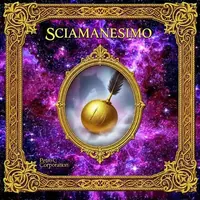
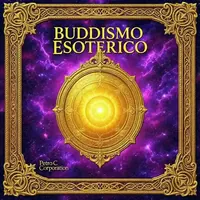
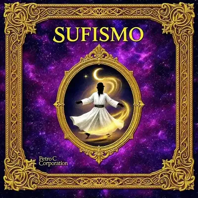
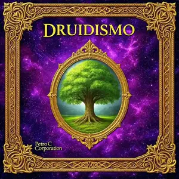
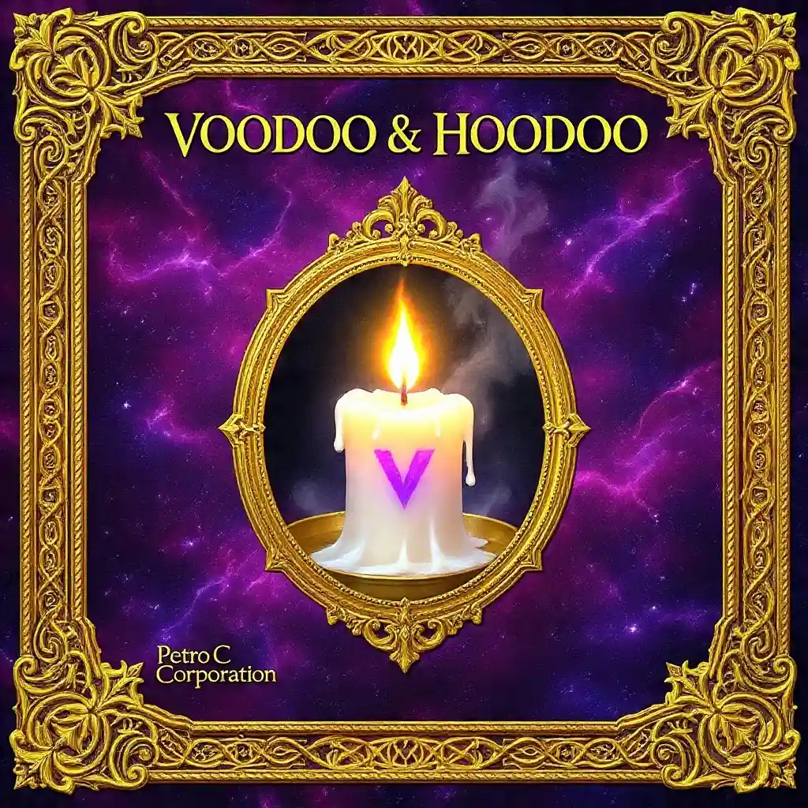
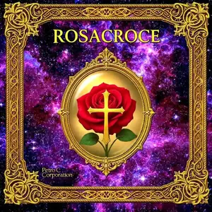

Tradizioni & Spiritualità del Mondo
Sei percorsi sacri da culture e continenti diversi: pratiche, simboli e saggezze che da secoli accompagnano la ricerca interiore dell'essere umano.

🌍 Origini e diffusione
Il termine "sciamano" deriva da šaman, parola dei popoli Tungusi della Siberia che indica "colui che sa" o "colui che è agitato". Ma la pratica sciamanica, ben più antica della parola che la descrive, compare in forme analoghe su ogni continente: tra i popoli indigeni della Siberia e della Mongolia, tra le Prime Nazioni del Nord America, tra le culture amazzoniche del Sud America, tra gli aborigeni australiani, nell'Africa subsahariana e persino nell'Europa preistorica, dove pitture rupestri di 30.000 anni fa già rappresentano figure ibride uomo-animale interpretate come sciamani in trance.
Non è una religione con dogmi o testi sacri, ma una tecnologia spirituale: un metodo pratico, trasmesso oralmente da maestro ad apprendista, per accedere a stati di coscienza non ordinari e operare nel mondo invisibile a beneficio della comunità.
🥁 Il viaggio sciamanico
Il cuore della pratica è il "viaggio": lo sciamano induce in sé una trance controllata attraverso il suono ripetitivo e monotono del tamburo (in genere tra 180 e 220 battiti al minuto, una frequenza che favorisce le onde cerebrali theta tipiche della trance leggera), il sonaglio, il canto, la danza prolungata, il digiuno o, in alcune culture, piante enteogene come l'ayahuasca amazzonica o il peyote messicano.
Mircea Eliade, storico delle religioni che ha sistematizzato lo studio dello sciamanesimo nel Novecento, descrive questo stato come un "volo dell'anima": lo sciamano si stacca dal corpo fisico e si muove lungo l'Albero del Mondo, l'axis mundi che collega i tre livelli della realtà.
🌳 I tre mondi
La cosmologia sciamanica, pur con varianti culturali, distingue tipicamente tre regni collegati da un asse centrale (spesso un albero, una montagna o un fiume): il Mondo Superiore, dimora di spiriti elevati, antenati saggi e divinità celesti, raggiunto risalendo; il Mondo di Mezzo, la realtà ordinaria vista però con percezione ampliata, dove si muovono spiriti della natura legati a piante, animali e luoghi; il Mondo Inferiore, regno di spiriti animali ancestrali e guardiani primordiali, raggiunto scendendo attraverso una fenditura nella terra, una tana o l'acqua.
✨ Spiriti guida e poteri animali
Durante il viaggio lo sciamano incontra alleati spirituali: spiriti animali di potere, antenati, maestri non incarnati o esseri di luce. Questi alleati offrono protezione durante il viaggio, insegnamenti, capacità di guarigione e, in molte tradizioni, il "recupero dell'anima" — la pratica di ritrovare frammenti dell'essenza vitale di una persona persi a causa di traumi, lutti o shock.
Lo sciamano non è solo un mistico isolato: nella società tradizionale svolge funzioni molto concrete di guaritore, consigliere, mediatore nei conflitti e custode della memoria collettiva, spesso individuato da segni particolari fin dall'infanzia, come una malattia grave superata o sogni ricorrenti e intensi.

🪷 Origini e via rapida
Il Buddismo Vajrayana — "il veicolo di diamante" — nasce in India attorno al VI-VII secolo come sviluppo tantrico del Buddismo Mahayana, per poi radicarsi profondamente in Tibet, dove diventa la forma dominante grazie a maestri come Padmasambhava, e diffondersi anche in Nepal, Bhutan, Mongolia e Giappone (qui nella variante Shingon).
Ciò che lo distingue dal Buddismo più tradizionale è la pretesa di offrire una "via rapida" al risveglio: invece di affinare gradualmente la mente in innumerevoli vite, il praticante tantrico utilizza tecniche dirette per trasformare le energie, le emozioni e persino i desideri ordinari in carburante per la realizzazione spirituale, anziché reprimerli.
🕉️ Mantra: il suono come strumento
I mantra sono formule sonore sacre — sillabe singole, parole o intere invocazioni in sanscrito — recitate per concentrare e trasformare la mente. Non sono semplici frasi: nella visione tantrica il suono stesso porta una vibrazione capace di sintonizzare chi lo recita con una qualità illuminata specifica.
Il mantra più diffuso anche in Occidente è "Om Mani Padme Hum", legato ad Avalokiteshvara, il bodhisattva della compassione: ciascuna delle sei sillabe è tradizionalmente associata alla purificazione di una specifica emozione disturbante e di uno dei sei regni di rinascita. Altri mantra noti includono quello di Tara Verde, protettrice e liberatrice dalle paure, e quello di Vajrasattva, usato per la purificazione.
🔯 Mandala: l'universo in un cerchio
Il mandala è un diagramma sacro, quasi sempre circolare e organizzato attorno a un centro, che rappresenta sia l'intero universo sia il "palazzo celeste" abitato da una specifica divinità tantrica. Nei monasteri tibetani i monaci li costruiscono spesso con sabbia colorata, lavorando per giorni con incredibile precisione geometrica — e poi li dissolvono ritualmente, gesto che insegna l'impermanenza di ogni cosa creata.
Oltre alla funzione rituale, il mandala è anche supporto di meditazione: visualizzandolo nei minimi dettagli, il praticante "entra" simbolicamente nel palazzo della divinità per identificarsi gradualmente con le sue qualità illuminate.
🤲 Mudra: il linguaggio delle mani
I mudra sono gesti rituali e simbolici delle mani e delle dita, eseguiti durante meditazione, cerimonie e rappresentazioni artistiche. Ogni mudra comunica un significato preciso: il Bhumisparsha mudra, mano che tocca la terra, rappresenta il momento dell'illuminazione del Buddha sotto l'albero della Bodhi; il Dhyana mudra, mani sovrapposte in grembo, indica la meditazione profonda; l'Abhaya mudra, palmo alzato verso l'esterno, è gesto di protezione e di assenza di paura.
🧘 Chakra e corpo sottile
La pratica tantrica lavora anche sul corpo energetico sottile, una rete di canali (nadi) e centri di energia (chakra) che non coincidono con organi fisici ma con punti di concentrazione della forza vitale. Tecniche di respirazione, visualizzazione e movimento mirano a far fluire questa energia liberamente, sciogliendo i blocchi che, secondo la tradizione, mantengono la mente nell'illusione e nella sofferenza.

🌙 Origini storiche
Il Sufismo (taṣawwuf in arabo) è la dimensione mistica e interiore dell'Islam. Le sue radici si trovano già nei primi due secoli dopo l'Egira (VII-VIII secolo), tra circoli ascetici che cercavano un rapporto diretto e intimo con Dio, oltre la sola osservanza della legge religiosa (shari'a). Il nome stesso potrebbe derivare da suf, la lana grezza con cui i primi mistici confezionavano le loro vesti semplici, simbolo di rinuncia al mondo materiale.
Nei secoli successivi il Sufismo si è organizzato in confraternite (tariqa), ciascuna fondata da un maestro spirituale e con proprie pratiche, catene di trasmissione e centri (zawiya o khanqah) diffusi dal Marocco all'Indonesia, dalla Turchia all'India.
📖 Rumi e la poesia mistica
Jalal ad-Din Rumi, poeta e mistico persiano del XIII secolo, è probabilmente la figura sufi più conosciuta a livello mondiale. Il suo capolavoro, il Masnavi, un'opera in versi di straordinaria profondità spirituale, e le sue raccolte di poesie d'amore mistico hanno reso il Sufismo familiare anche a chi non conosce l'Islam, grazie a temi universali come l'amore divino, la nostalgia dell'anima per la sua origine e la dissoluzione dell'ego.
Dal suo insegnamento nacque l'ordine Mevlevi, celebre per il sama, la cerimonia dei "dervisci rotanti": una danza rituale circolare e ipnotica, accompagnata da musica, durante la quale il danzatore ruota su se stesso per ore in una sorta di meditazione in movimento, fino a raggiungere uno stato di estasi e annullamento dell'ego.
💫 Dhikr: il ricordo di Dio
Il dhikr è la pratica centrale del Sufismo: la ripetizione, individuale o collettiva, dei nomi di Dio o di formule sacre, spesso accompagnata dal respiro, dal movimento del corpo o dalla musica. Lo scopo è purificare il cuore dalle distrazioni mondane e mantenere viva, momento per momento, la consapevolezza della presenza divina. Alcune confraternite praticano il dhikr in cerchio, con un ritmo che si intensifica progressivamente fino a indurre stati di profonda assorbimento spirituale.
📿 La via, le stazioni, gli stati
Il percorso sufi (tariqa, "la via") è guidato da un maestro spirituale (sheikh o pir) che accompagna il discepolo attraverso stazioni interiori (maqamat) — pentimento, pazienza, gratitudine, povertà spirituale — e stati di grazia transitori (ahwal) concessi come doni durante il cammino. La meta finale è la fana, la dissoluzione dell'ego separato nell'oceano dell'amore divino, seguita dalla baqa, la "sussistenza" rinnovata in Dio.

🍃 Chi erano i Druidi
I Druidi costituivano la classe sacerdotale e intellettuale delle società celtiche che abitavano Gallia, Britannia, Irlanda e parte dell'Europa centrale, tra l'età del ferro e i primi secoli dopo Cristo. Le fonti più antiche che li descrivono sono in realtà romane e greche — Giulio Cesare ne parla nel "De Bello Gallico" — quindi filtrate dallo sguardo di un'altra cultura, spesso poco comprensiva.
I Druidi non erano solo figure religiose: svolgevano anche funzioni di giudici nelle dispute tra clan, consiglieri dei capi, insegnanti e custodi della memoria storica e genealogica del popolo. La formazione druidica poteva durare fino a vent'anni di apprendistato orale: nessun testo scritto in lingua celtica sui loro insegnamenti ci è giunto, perché la trasmissione della conoscenza sacra avveniva esclusivamente a voce.
🌲 La sacralità della natura
Per i Celti la natura non era uno sfondo inerte ma un tessuto vivo di presenze sacre. I boschi, in particolare i boschetti di querce (il nome "druido" è stato collegato da alcuni studiosi alla radice indoeuropea per "quercia", drus), erano i veri templi: non si costruivano edifici di culto elaborati, perché la radura tra gli alberi era già spazio sacro.
Fiumi, sorgenti e laghi erano dimora di divinità femminili legate alla guarigione e alla fertilità; il vischio, raccolto con un falcetto d'oro secondo il celebre racconto di Plinio il Vecchio, era considerato pianta sacra di grande potere, soprattutto quando cresceva sulla quercia.
🔥 Il calendario e le grandi festività
Il tempo celtico era scandito da un calendario lunisolare con otto festività principali (oggi note come la "Ruota dell'Anno"), che segnavano i punti cardine dell'anno agricolo e spirituale: Samhain (fine ottobre-inizio novembre), capodanno celtico e momento in cui il confine tra il mondo dei vivi e quello degli spiriti si assottiglia; Imbolc (inizio febbraio), risveglio della terra; Beltane (inizio maggio), celebrazione della fertilità e dell'unione tra le forze maschili e femminili della natura, con i celebri fuochi rituali; Lughnasadh (inizio agosto), festa del primo raccolto dedicata al dio Lugh.
🔮 Il Druidismo contemporaneo
A partire dal XVIII secolo, in pieno clima romantico, è nato in Inghilterra e Galles un movimento di rinascita druidica (Neo-druidismo) che ha reinterpretato queste radici storiche come spiritualità della natura, della pace e della celebrazione dei cicli stagionali. Oggi gruppi druidici moderni organizzano cerimonie pubbliche nei grandi siti megalitici britannici, in primis Stonehenge, specialmente nei solstizi d'estate e d'inverno, intrecciando ricerca storica, poesia (l'eredità dei Bardi celtici) ed ecologia spirituale.

🌍 Origini e sincretismo
Il Vodou (la grafia storicamente più corretta, da cui deriva l'italiano "Voodoo") nasce dall'incontro forzato tra le tradizioni religiose dei popoli dell'Africa occidentale — in particolare i Fon e gli Ewe del regno di Dahomey, oggi Benin, da cui proviene il termine "vodun", spirito — e il cattolicesimo imposto dai colonizzatori durante la tratta atlantica degli schiavi. Ad Haiti questo incontro ha dato vita a una religione strutturata e riconosciuta, con un proprio clero (houngan e mambo, sacerdoti e sacerdotesse), templi (hounfor) e una cosmologia coerente.
Negli Stati Uniti, in particolare in Louisiana, una variante distinta si è sviluppata attorno a New Orleans, influenzata anche da elementi delle tradizioni native americane e dello spiritismo europeo, con figure storiche come Marie Laveau, sacerdotessa vodou divenuta leggendaria nel XIX secolo.
🌀 Bondye e i Loa
Al vertice della cosmologia vodou c'è Bondye (dal francese "bon Dieu"), il Dio creatore supremo, distante e non direttamente invocato nei rituali quotidiani. Tra Bondye e gli esseri umani agiscono i Loa (o Lwa), spiriti intermediari ciascuno con personalità, simboli, colori, cibi preferiti e ambiti di competenza propri: Papa Legba, il guardiano dei crocevia che apre la comunicazione tra i mondi e va sempre salutato per primo in ogni rituale; Erzulie, legata all'amore e alla femminilità in molte sue declinazioni; Damballa, lo spirito-serpente associato alla saggezza primordiale e alla creazione.
I Loa vengono "chiamati" durante cerimonie con tamburi, canti e danza, e secondo la tradizione possono manifestarsi possedendo temporaneamente il corpo di un fedele per comunicare direttamente con la comunità.
🕯️ Antenati e culto dei morti
Gli antenati occupano un ruolo centrale quanto i Loa: si ritiene che continuino a vegliare sulla famiglia e sulla comunità dopo la morte, e che vadano onorati con offerte, preghiere e memoria attiva. Questo legame profondo con chi non è più in vita è uno dei tratti che il Vodou condivide con molte religioni dell'Africa occidentale da cui discende.
🌿 L'Hoodoo: magia popolare, non religione
Distinto con chiarezza dal Vodou come sistema religioso organizzato, l'Hoodoo (chiamato anche "rootwork" o "conjure") è un insieme di pratiche di magia popolare nato tra le comunità afroamericane del Sud degli Stati Uniti, spesso conservato e praticato anche da persone di fede cristiana, senza contraddizione percepita tra le due cose.
Gli strumenti tipici dell'Hoodoo includono i mojo bags, piccoli sacchetti rituali riempiti con erbe, radici, pietre e oggetti simbolici cuciti per uno scopo specifico (protezione, amore, fortuna nel lavoro); le candele colorate, ciascuna associata a un'intenzione; bagni rituali con erbe; e l'uso di radici come quella di Giovanni il Conquistatore (High John the Conqueror), tra le più celebri nella tradizione per fortuna e protezione personale.

📜 I manifesti misteriosi
Il movimento rosacrociano entra nella storia in modo insolito: non con la fondazione documentata di un ordine, ma con la pubblicazione, tra il 1614 e il 1616 in Germania, di tre testi anonimi diventati celebri — la "Fama Fraternitatis", la "Confessio Fraternitatis" e "Le Nozze Chimiche di Christian Rosenkreutz". Questi manifesti narravano l'esistenza di un'antica fratellanza segreta, fondata secoli prima dal leggendario Christian Rosenkreutz, che avrebbe viaggiato in Oriente per raccogliere una sintesi di sapienza tra scienza, alchimia, cabala e spiritualità cristiana.
L'effetto fu immediato e dirompente: in tutta Europa intellettuali, alchimisti e teologi iniziarono a cercare contatto con questa fratellanza misteriosa, scrivendo lettere che restarono senza risposta, perché — secondo l'interpretazione storica più accreditata — l'ordine descritto nei manifesti era probabilmente un'allegoria filosofica più che un'organizzazione reale e operativa di quel tempo.
🌹 Il simbolo: la rosa sulla croce
Il simbolo distintivo dell'intera tradizione racchiude il suo insegnamento centrale. La croce rappresenta il corpo, la materia, la sofferenza e la limitazione della condizione terrena: è la struttura su cui si svolge ogni esperienza umana. La rosa che sboccia al centro della croce — spesso a cinque o sette petali, numeri ricchi di significati esoterici — simboleggia lo sviluppo dell'anima, l'amore divino e la rivelazione interiore che fiorisce proprio a partire dalla disciplina e dalla sofferenza accettata e trasformata, non evitata.
⚗️ Una sintesi di saperi esoterici
L'insegnamento rosacrociano non nasce dal nulla, ma intreccia consapevolmente diverse correnti già presenti nella cultura esoterica rinascimentale: l'alchimia, intesa non solo come ricerca chimica ma come metafora della trasformazione interiore dell'anima; la Cabala ebraica, soprattutto nella sua rilettura cristiana diffusa tra Quattrocento e Cinquecento; l'Ermetismo, con il principio della corrispondenza tra microcosmo e macrocosmo; e un misticismo cristiano attento al significato simbolico, più che letterale, dei testi sacri.
Da questa fusione nasce l'idea di un cammino di perfezionamento personale guidato da un sapere "occulto" — nel senso originario di nascosto, non immediatamente accessibile — che richiede studio, disciplina morale e, in molte versioni successive del movimento, l'appartenenza a un ordine iniziatico strutturato in gradi.
🏛️ Dal mito alle organizzazioni moderne
Nei secoli successivi ai manifesti originari sono nate numerose organizzazioni che si sono dichiarate eredi della tradizione rosacrociana, alcune collegate alla Massoneria speculativa (come il Rito Scozzese Antico ed Accettato, che include un grado dedicato proprio alla Rosa-Croce), altre indipendenti e diffuse a livello internazionale nel corso del XIX e XX secolo. Pur con differenze anche significative tra loro, condividono l'eredità simbolica della rosa e della croce e l'idea di un sapere iniziatico trasmesso per gradi successivi di comprensione.
I contenuti di questa pagina hanno finalità informativa, culturale e divulgativa. Tradizioni religiose e spirituali appartengono ai popoli che le custodiscono: trattiamo questi temi con rispetto, senza pretesa di esaustività dottrinale.